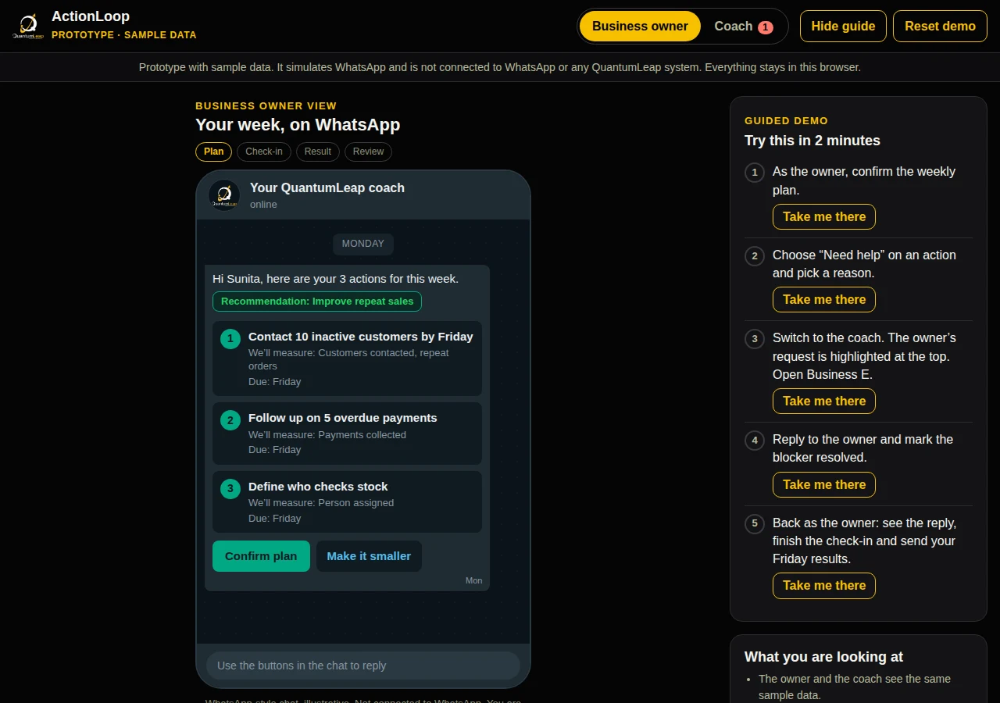
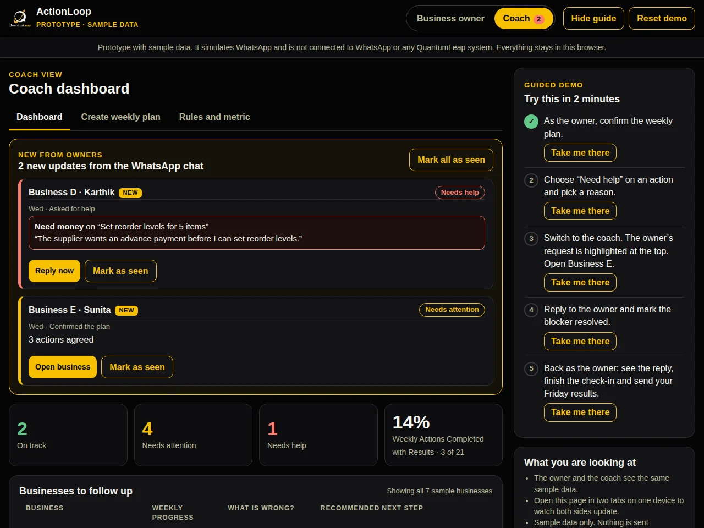

Helping MSME owners turn coaching advice into weekly action.
Role
Solo
Type
Product design assignment
For
QuantumLeap, a business growth partner for MSMEs
Deliverables
A five-slide deck, an approach document and a working prototype
The brief
Help MSME owners turn coaching advice into measurable weekly actions, and help coaches see who needs support.
Design a simple digital product or feature that helps MSME owners convert the recommendations received during QuantumLeap’s coaching programmes into measurable weekly actions, while enabling coaches to monitor progress and intervene when required.
The recommendation had to cover seven things. Jump to each:
QuantumLeap is a business growth partner for Micro, Small and Medium Enterprises (MSMEs). Through business training, consulting and personalised coaching, it helps entrepreneurs build stronger businesses and achieve sustainable growth.
Business trainingConsultingPersonalised coaching
VisionTo help MSMEs build profitable, scalable businesses through practical strategies and execution.
Users and problem
Coaching gives owners direction. The challenge is turning advice into action.
Coaching session→Recommendations→Daily business pressures→Actions get delayed→Coach finds out late
Business owner
Knows what to do, but struggles to follow through.
Daily operations take priority.
Recommendations can feel too broad.
Progress and blockers are hard to track.
Business coach
Cannot easily see which businesses need help.
Supports multiple business owners.
Often hears about problems after delays.
Needs to know who is stuck and why.
The assignment says follow-through is inconsistent. It does not say why. So I treat what follows as things to validate, not facts:
→Are weekly actions easier to complete than broad recommendations?
→Is WhatsApp a convenient way to share updates?
→Would peer accountability help some owners stay consistent?
Opportunity: help owners take clear weekly actions, and help coaches identify problems early.
Personas are illustrative. Assumptions need validation with owners and coaches.
The first version
Eight features considered. Four prioritised for the first version.
I rated each feature on impact and effort. The ratings are my own estimates, and I would check them with QuantumLeap’s team. The first version is the smallest thing that can answer one question: if owners get a clear weekly plan and coaches can see who is stuck, does follow-through improve?
Feature
What it does
Impact
Effort
Decision
Weekly Action Planner
Turn coaching advice into measurable weekly actions.
High
Low
Build first
WhatsApp Updates
Let owners receive their plan and share progress.
High
Medium
Build first
Blocker Reporting
Let owners explain a delay and ask for help.
High
Low
Build first
Coach Dashboard
Show which businesses are on track or need help.
High
Medium
Build first
Business Results Tracking
Connect actions to measurable business results.
Medium
Medium
Build next
AI Action Drafting
Suggest weekly actions for the coach to approve.
High
High
Add later
Voice Note Updates
Let owners send updates as voice notes.
Medium
High
Add later
Peer Accountability Groups
Let owners support each other between sessions.
Unclear
Medium
Test later
First version
A simple weekly workflow that helps owners plan actions, report progress and get help when stuck.
Next to explore
Track how completed actions contribute to business goals.
Test or add later
Peer groups, if owners want them, and AI features, once the first version shows they are worth it.
A simple result field is part of the first version. At first, coaches would write the weekly actions by hand from the coaching plan, with simple templates. That takes more coach time at the start, but it shows which recommendations are hard to turn into actions, and that tells us what is worth automating later.
The experience
From coaching advice to a result, one week at a time.
The loop runs on WhatsApp, because that is where owners already hear from their coach. WhatsApp is an assumption I would check with owners.
Recommendation
Improve repeat sales.
This week’s action
Contact 10 inactive customers by Friday.
What we measure
Customers contacted and repeat orders received.

The owner’s view in the prototype: the Monday plan on a WhatsApp-style chat, with three actions, what each will measure, and one tap to confirm. Sample data.
Consistent usage
Why owners keep using it.
→Three actions, no more. A small weekly commitment is easier to keep.
→One-tap updates. Done, Partly done or Need help, answered in seconds.
→Help instead of blame. A missed action leads to support. Needs help never means a bad owner.
→Introduced in the session. The coach and owner agree the actions together, so the plan feels like theirs.
→A result for every action. A completed action needs a recorded result. It does not have to be a good one.
Coach monitoring
Help coaches see who needs support, and what to do next.
Instead of opening every business, the coach sees three counts: on track, needs attention and needs help. Below them is a short list of businesses to follow up, with what is wrong and a recommended next step, so the coach knows what to do, not only who to look at. In the first version this could be a simple spreadsheet or web page, before any bigger platform is built.

Coach dashboardThe coach dashboard in the prototype: new updates from owners at the top, then counts and a list of businesses to follow up. Sample data.
The rules, in plain words
01Missing updateFollow up.
02Unresolved blockerOffer support.
03Missed actionUnderstand why before changing the plan.
From the owner’s request to the coach’s response:
Try the prototype
A working prototype for both users.
Switch between the owner and the coach, and the two stay in step: an owner’s update changes the coach’s view, and a coach’s reply shows up in the owner’s chat. It uses sample data and simulates WhatsApp, so nothing is sent anywhere. Follow the guided demo on the right, or open it full screen.
Try this in two minutes: confirm the weekly plan as the owner, choose Need help on an action and pick a reason, switch to the coach and open the highlighted business, reply and mark the blocker resolved, then go back to the owner to see the reply.
Metrics
Measure whether owners take action before adding more features.
Main success metric
Weekly Actions Completed with Results
Actions completed by the agreed deadline with a recorded result, divided by total actions due that week, times 100.
It shows who followed through, not who just opened messages. Cancelled or changed actions stay in the count unless the coach and owner agreed the change in advance, so the number cannot be improved by deleting actions. The result does not have to be good, only recorded.
Supporting metrics
Share of owners still using it after four weeks.
Share of reported blockers resolved.
Coach time spent per business each week.
Progress towards agreed business goals.
Pilot and roadmap
Eight weeks to learn, then a clear order of work.
→Baseline first, then eight weeks. I would not set an improvement target until I see the baseline, and any target stays a hypothesis.
→Two comparable groups. Group A uses the weekly workflow. Group B adds peer groups. Both use the same action planning, so any difference comes from the peer support.
→What I would compare. Completion, continued use and coach workload. For peer groups, opt-in and continued participation are tracked separately.
→An honest limit. Eight weeks can show whether owners act, not whether revenue improves.
Now
Weekly plans, updates, blockers and the coach dashboard.
Next
Better results tracking, once owners report consistently.
Later
Peer groups, AI-drafted actions and voice updates, only if the evidence supports them.
Risks and assumptions
What could go wrong, and what I would check first.
Risk
Response
Too many reminders
Keep updates short.
Empty ticks, with no real progress
Ask for a result, not just a tick.
Coach overload
Show the most urgent issues first.
Privacy worries about peers
Keep groups optional, and sensitive information private.
Assumptions to check first
WhatsApp suits owners.
Owners report honestly.
Coaches have the time.
Trade-offs I accept
More coach time at the start, because coaches write the actions by hand, instead of automating early.
A simple result field now, with a fuller results tracker later.